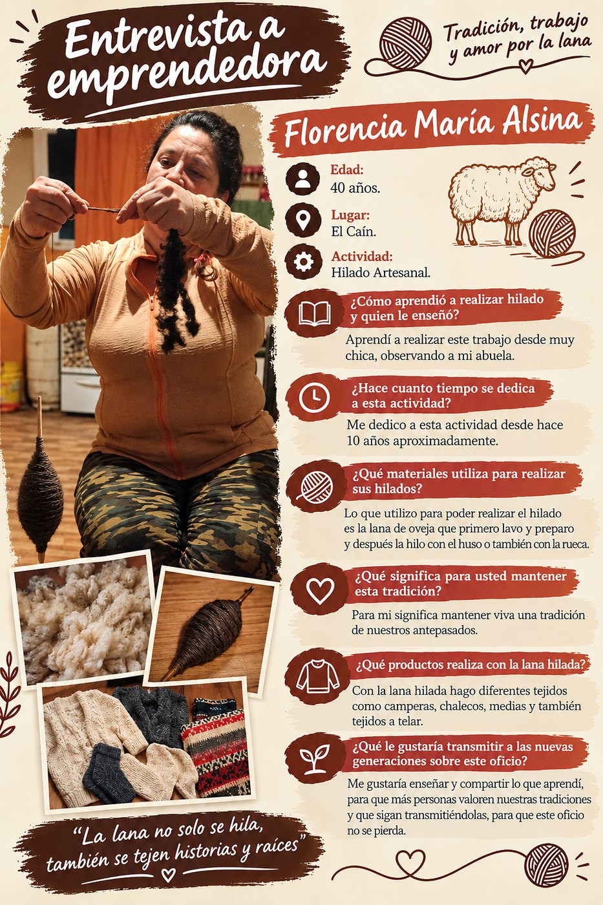

Tradición, trabajo y amor por la lana.
Florencia María Alsina vive en El Cañón y tiene 40 años. Aprendió a hilar de su abuela, cuando era chica, y hoy lleva unos diez años dedicada al hilado artesanal.

Preguntas y respuestas
¿Cómo aprendiste a realizar hilado y quién te enseñó?
«Aprendí a realizar este trabajo desde muy chica, observando a mi abuela.»
¿Hace cuánto tiempo se dedica a esta actividad?
«Me dedico a esta actividad desde hace 10 años aproximadamente.»
¿Qué materiales utiliza para realizar sus hilados?
«Lo que utilizo para poder realizar el hilado es la lana de oveja que primero lavo y preparo y después la hilo con el huso o también con la rueca.»
¿Qué significa para usted mantener esta tradición?
«Para mí significa mantener viva una tradición de nuestros antepasados.»
¿Qué productos realiza con la lana hilada?
«Con la lana hilada hago diferentes tejidos como camperas, chalecos, medias y también tejidos a telar.»
¿Qué le gustaría transmitir a las nuevas generaciones sobre este oficio?
«Me gustaría enseñar y compartir lo que aprendí, para que más personas valoren nuestras tradiciones y que sigan transmitiéndolas, para que este oficio no se pierda.»
La lana no solo se hila, también se tejen historias y raíces.
